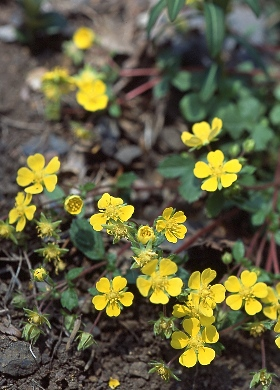

キジムシロ
基本データ
- 日本名：きじむしろ（雉筵）
- 科目 ：バラ科
- 学名 ：Potentilla sprengeliana
| 生息地 | 道端 | |
| 大きさ | 5～15cm | |
| 花の咲く時期 | 7～8月 | |
| 花の色 | 黄色 | |
| 花びらの枚数・形 | 5枚 |
つる性の茎をいっぱい地面に伸ばして広がっていくので、花の姿より、どちらかというと、茎の様子をムシロと見たのではないかとも思われるのだが。仲間にはツル性の ツルキジムシロ がある。また、 ミツバツチグリ 似よく似るが、キジムシロのようにつるを伸ばさない